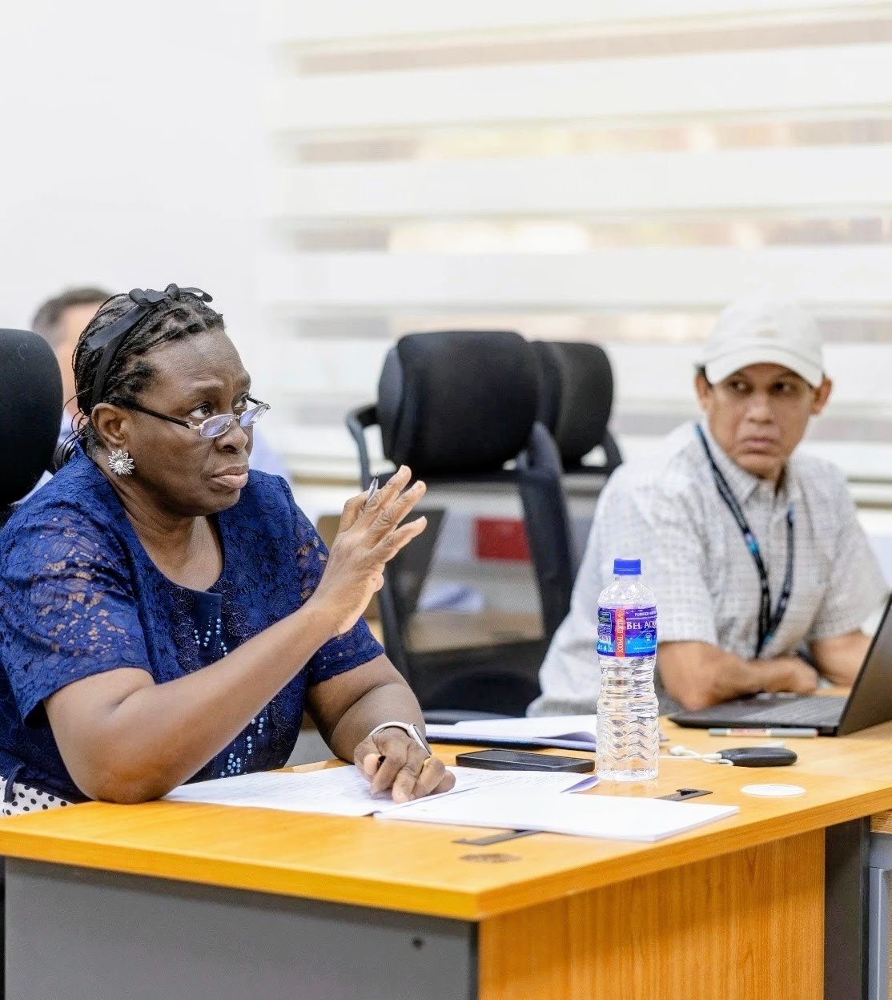
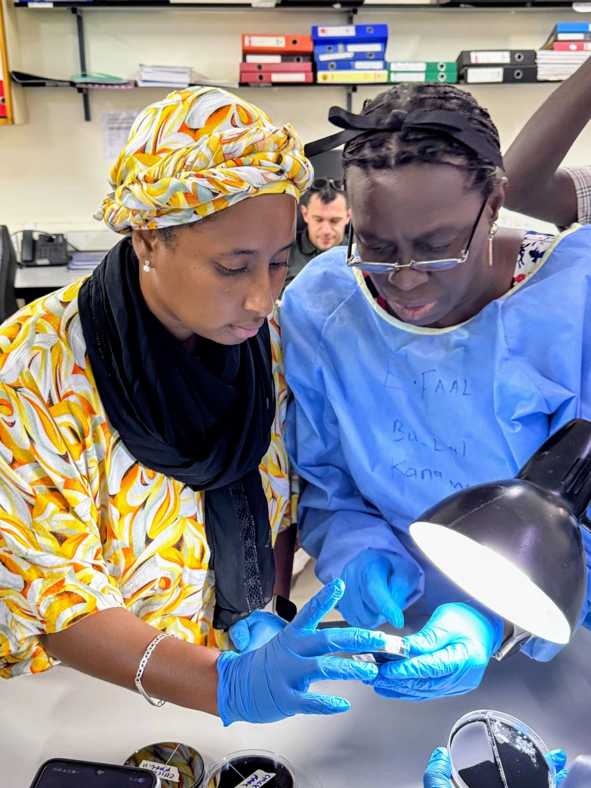
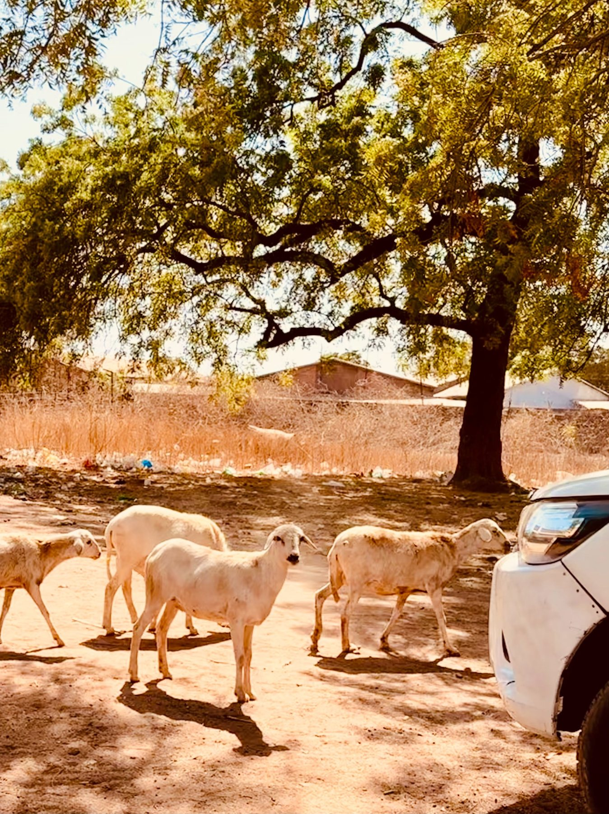
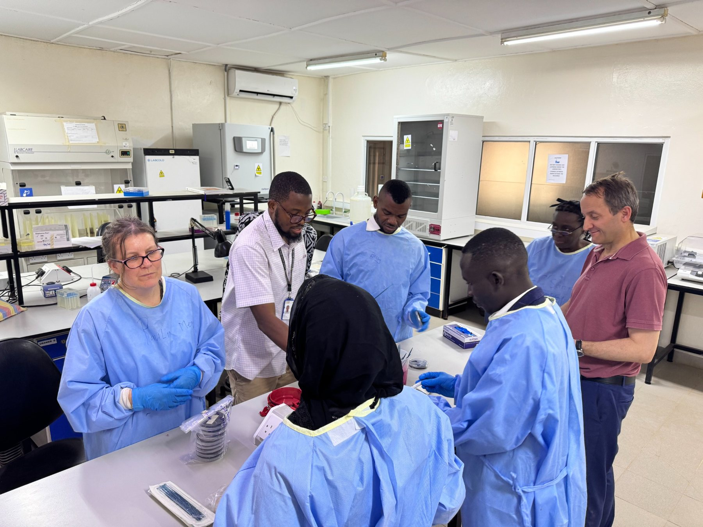
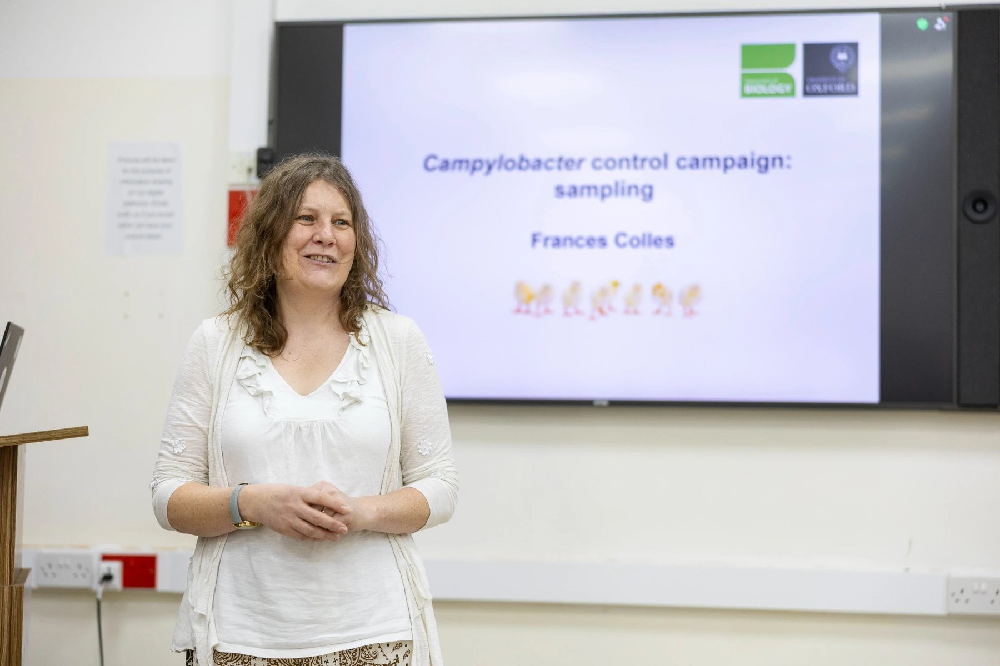
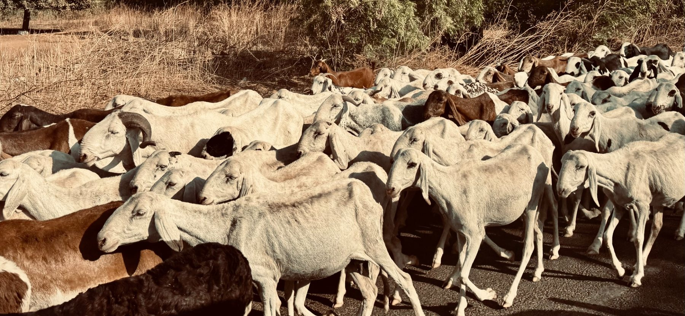
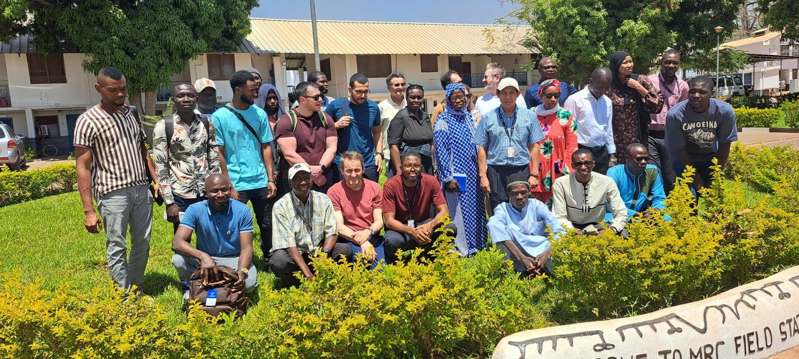

Workshop
CCC kick-off workshop
Consortium members at the CCC kick-off workshop in The Gambia.
 Campylobacter Control Campaign
Campylobacter Control Campaign
Media
Approved project images, fieldwork photos and media guidance.
Selected images from the CCC kick-off workshop and field visit are shown below. The full album is kept on Flickr.
Featured

Consortium members met in The Gambia to discuss sampling, laboratory workflows, genomics, source attribution and implementation across participating sites.
View full Flickr albumGallery
Workshop
Consortium members at the CCC kick-off workshop in The Gambia.

Training
Frances Colles introducing sampling approaches during the workshop.
Laboratory
Hands-on laboratory training for Campylobacter culture and sample processing.

Workshop
Consortium discussion on sampling, implementation and project delivery.

One Health
Livestock are central to the One Health transmission system CCC is investigating.

Environment
Water and environmental exposure routes are part of the CCC sampling framework.

Field context
Field setting during the CCC kick-off visit.

Field context
Community context for One Health enteric disease research. Use publicly only where permissions are confirmed.
Publish only if consent/approval is confirmed.
How to add photos
Keep the full project archive in the CCC Flickr account or a restricted shared folder.
Only approved public images should appear on this website.
Use a small number of strong images on the website, linking back to the full album.
Private archive
A private photo archive can be linked here for consortium members if needed.
Private collection: TBC